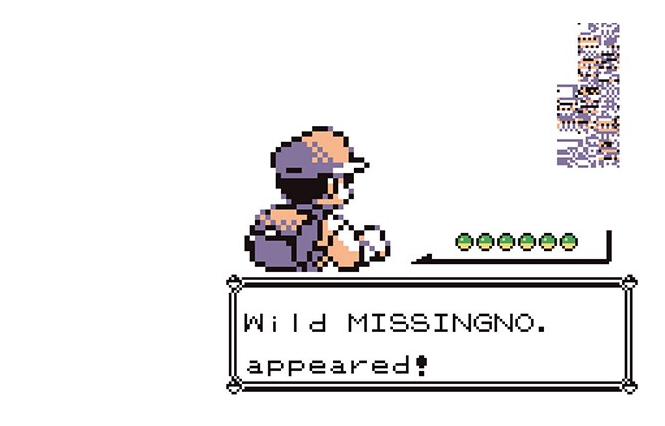

Why MissingNo. clones the sixth item?
November/2020 Javier Cabezas
One of the most well-known MissingNo. characteristics was the capability to clone the sixth item in the players bag. The goal of this article is to know why this glitch works.